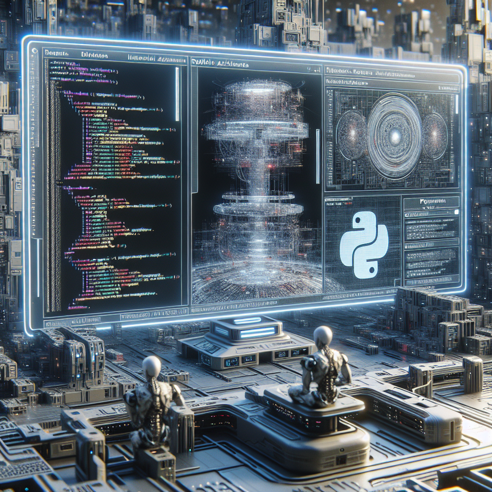

Python and the Future of AI
Python has become one of the most popular programming languages in the world, and for good reason. It is versatile, easy to learn, and has a wide range of applications. One of the most exciting areas where Python is making a huge impact is in the field of artificial intelligence (AI). With its powerful libraries and frameworks such as TensorFlow and PyTorch, Python has become the go-to language for building and training AI models.
One of the main reasons why Python is so well-suited for AI is its simplicity. Its syntax is easy to understand and read, making it accessible to both beginner and experienced programmers. This has led to a large community of developers constantly working to improve and expand upon Python's capabilities in the AI realm. With the increasing demand for AI solutions in various industries, Python's popularity is only expected to grow, cementing its place as the language of choice for AI development. As advancements in AI continue to push the boundaries of what is possible, Python will undoubtedly play a significant role in shaping the future of this rapidly evolving field.